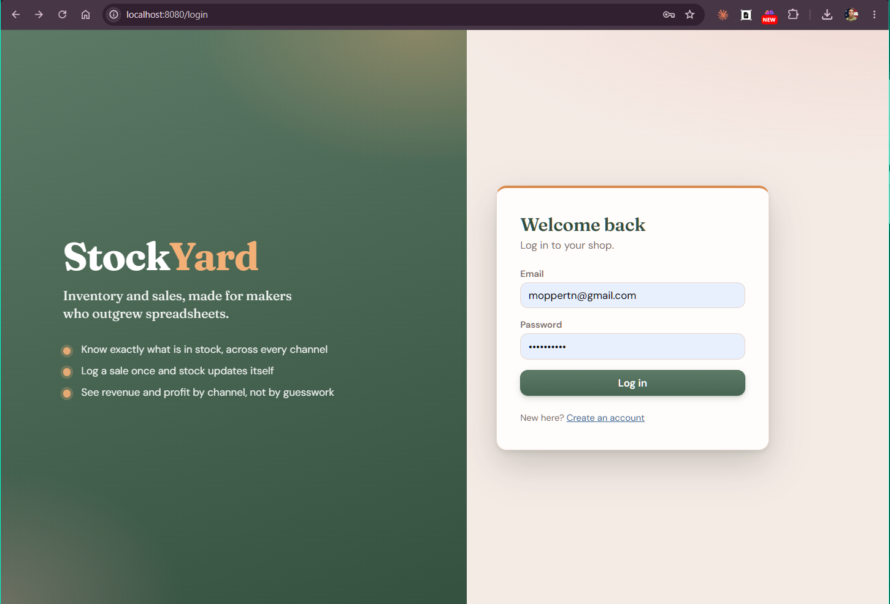
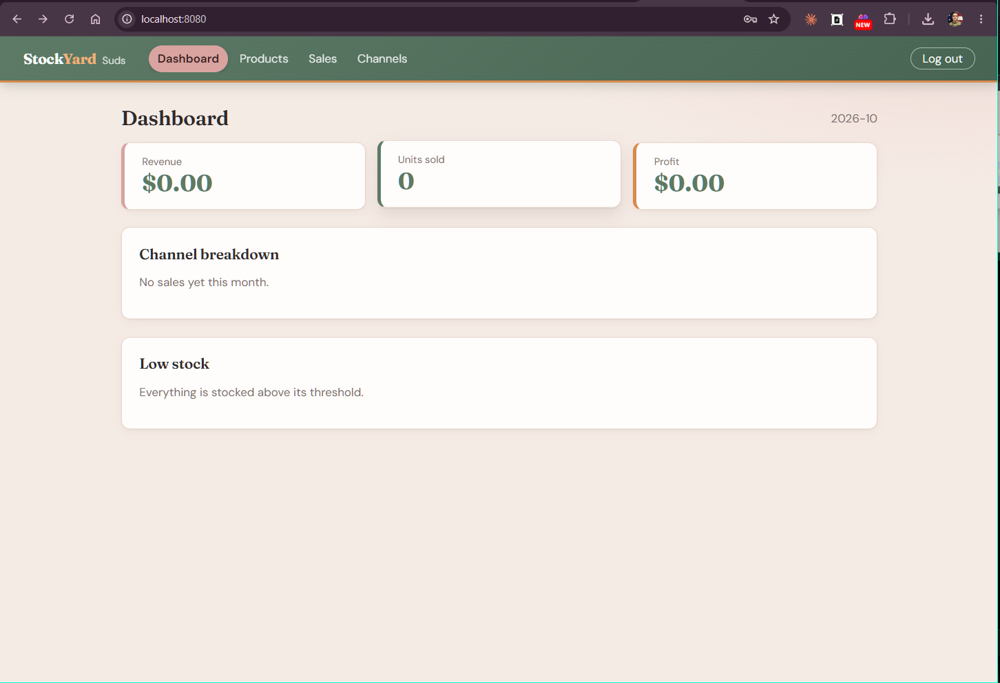

StockYard
Inventory and sales, made for makers who outgrew spreadsheets.
Nicholas Moppert
Hi, I'm Nicholas, and this is StockYard, my capstone. In the next nine minutes I'll show you the problem it solves, the working app, the code behind it, and what I learned. Everything I show runs from the repository you can clone today.
The problem
Spreadsheets break. Enterprise tools overcharge.
Solo makers selling on Etsy, at markets, and from their own sites hit a wall once inventory grows.
1
Counts drift Sell a mug at a craft fair and Etsy still shows it in stock. Someone has to fix it by hand.
2
Profit is a guess Revenue is easy to see. What each channel actually earns after cost of goods is not.
$50
Per month, for features they'll never touch The usual escape from the spreadsheet is a heavy platform built for businesses ten times the size.
The gap is real. A maker selling candles or prints has outgrown a spreadsheet but doesn't need a fifty-dollar-a-month enterprise platform. StockYard fills that gap: precise inventory, multi-channel sales, and one focused dashboard.
The solution
One place for stock, sales, and the numbers
Every capability from the proposal's MVP shipped.
Product catalog SKU, photo, cost, price, stock Edit any time Archive without losing history Sales ledger Log product, channel, quantity, price Stock drops automatically Filter by date and channel Your own channels Etsy, markets, direct, pop-ups Rename or add anytime Starter set on sign-up Dashboard Month revenue, units, profit Channel breakdown chart Low-stock restock list Private by design Secure sign-up and login Stays signed in on reload Shops can't see each other Works anywhere Phone, tablet, desktop Breakpoints at 480, 768, 1024
Six areas. Products, a sales ledger, custom channels, a dashboard, authentication, and a responsive layout. I'll show them live in a moment.
Live demo
See it working

Sign in or create a shop 
Dashboard: revenue, units, profit, channel chart, low stock
SWITCH TO THE LIVE APP NOW (http://localhost:8080 or the hosted link). Walk through: 1) Create an account. 2) Add a product with a photo, cost 4, price 18, stock 10, threshold 3. 3) Go to Sales, log 8 units on Etsy. 4) Try to log 3 more and show the "Not enough stock" rejection. 5) Back to the Dashboard: revenue, profit, channel chart, and the low-stock list now show the product. 6) Shrink the browser to show the mobile layout.
Architecture
Layered, simple to run
A React single-page app talks JSON over HTTP to a layered Spring Boot API backed by PostgreSQL.
React 18 + Vite React Router, Axios interceptors, Recharts, CSS Modules
⇄
Controllers REST + validation
→
Services Business rules, transactions
→
Repositories Spring Data JPA
→
PostgreSQL 16 Flyway-versioned schema
Java 21 Spring Boot 3.5 Spring Security + JWT
DTO records OpenAPI docs Docker Compose GitHub Actions CI
The back end follows strict layers: controllers, services, repositories, DTOs. The schema is versioned with Flyway. In production the React build is bundled into the Spring Boot jar, so the whole app ships as a single Docker image alongside Postgres. Now let me walk through the code, following one request from the browser to the database. Press the right arrow to step through each highlight.
Code walkthrough · one request, end to end
Logging a sale
SaleController.java → SaleService.java (trimmed)
@PostMapping public SaleResponse record(@AuthenticationPrincipal MakerPrincipal me, @Valid @RequestBody SaleRequest req) { return service.record(me.id(), req); } @Transactional public SaleResponse record(Long makerId, SaleRequest req) { Product product = products.findByIdAndMakerId (req.productId(), makerId) .orElseThrow(() -> ApiException.notFound("Product" )); // channels are looked up the same way if (products.decrementStock (product.getId(), makerId, qty) == 0) { throw ApiException.conflict("Not enough stock for " + sku); } Sale sale = new Sale(maker, product, channel, qty, price); // the Sale constructor copies today's unit cost return SaleResponse.of(sales.save(sale)); }
1
The controller stays thin Spring Security hands it the signed-in maker, and @Valid rejects bad input before any business logic runs. Everything else is delegated.
2
Ownership on every lookup Products and channels are fetched by id and maker. Someone else's product simply doesn't exist for you: a 404, never a data leak.
3
One guarded statement decides The database lowers stock only if enough remains. Zero rows updated means the sale is refused with a 409. No read-then-write race.
4
Ledger in the same transaction The sale copies the unit cost at that moment, then saves. @Transactional makes stock and ledger commit together, or not at all.
Follow one request. Step 1: the controller is thin. It gets the authenticated maker from the JWT and validates the body. Step 2: every lookup includes the maker id, so you can only touch your own data. Step 3: a single guarded UPDATE decides whether stock is available, which removes race conditions. Step 4: the sale is saved in the same transaction, with a snapshot of the unit cost so past profit never changes.
Code walkthrough · security
Stateless JWT authentication
SecurityConfig · JwtAuthFilter · JwtService (trimmed)
.sessionManagement(s -> s.sessionCreationPolicy(STATELESS )) .addFilterBefore(jwtFilter, UsernamePasswordAuthenticationFilter.class ) .authorizeHttpRequests(a -> a .requestMatchers("/api/auth/register" , "/api/auth/login" ).permitAll() .requestMatchers("/api/**" ).authenticated () .anyRequest().permitAll()) // JwtAuthFilter String header = request.getHeader(HttpHeaders.AUTHORIZATION); if (header != null && header.startsWith("Bearer " )) { jwt.parse (header.substring(7)).ifPresent(principal -> SecurityContextHolder.getContext().setAuthentication(auth)); } // JwtService Jwts.builder().subject(String.valueOf(makerId)) .claim("email" , email) .expiration(Date.from(now.plus(ttl))) .signWith (key).compact();
1
No server sessions Nothing is remembered on the server between requests. Each request carries its own proof of identity, so the API scales and restarts cleanly.
2
A filter checks every call It reads the Bearer token, verifies the signature and expiry, and puts the signed-in maker into the security context.
3
Locked by default Only sign-up and login are open. Every other /api route requires a valid token; everything else is just the React app.
4
Signed, expiring tokens Tokens carry the maker id and an expiry, signed with a secret from the environment. Passwords are stored only as BCrypt hashes.
Security is stateless. A filter validates the JWT on each request. Only register and login are public; every other API route needs a token. Tokens are signed with a secret that comes from an environment variable, and passwords are stored as BCrypt hashes.
Code walkthrough · database
A schema that protects itself
V1__init.sql · Flyway migration (excerpt)
CREATE TABLE sales ( id BIGINT GENERATED BY DEFAULT AS IDENTITY PRIMARY KEY , maker_id BIGINT NOT NULL REFERENCES makers(id) ON DELETE CASCADE , product_id BIGINT NOT NULL REFERENCES products(id), channel_id BIGINT NOT NULL REFERENCES channels(id), quantity INTEGER NOT NULL CHECK (quantity > 0), unit_price NUMERIC(12,2) NOT NULL CHECK (unit_price >= 0), unit_cost NUMERIC(12,2) NOT NULL CHECK (unit_cost >= 0), sold_at TIMESTAMP WITH TIME ZONE NOT NULL ... ); CREATE INDEX idx_sales_maker_date ON sales(maker_id, sold_at); -- products table stock INTEGER NOT NULL CHECK (stock >= 0), CONSTRAINT uq_products_maker_sku UNIQUE (maker_id, sku)
1
Normalized and linked Each sale points to its maker, product and channel with foreign keys. No duplicated names, no orphan rows.
2
Rules live in the database No negative stock or prices, quantity above zero, one SKU per maker. Even a bug in the app can't write bad data.
3
Cost is snapshotted Each sale stores the cost at the time. Edit a product's cost later and last month's profit stays correct.
4
Indexed for the questions we ask Maker plus date range is exactly how the dashboard and ledger filter. Flyway applies this same schema in every environment.
The database enforces the rules. Foreign keys keep data normalized, CHECK constraints prevent invalid values, and a unique constraint keeps SKUs unique per shop. The sales table snapshots unit cost so history never changes. An index on maker and date matches the dashboard and ledger queries, and Flyway applies the identical schema everywhere.
Code walkthrough · front end
From API to a responsive chart
Dashboard.jsx · Dashboard.module.css · tokens.css
useEffect (() => { api.get('/api/dashboard' ).then((r) => setData(r.data)) .catch((e) => setError(describeError(e).message)); }, []); const chartData = data.channels.map((c) => ({ name: c.channelName, Revenue: Number(c.revenue), Profit: Number(c.revenue) - Number(c.cost), })); <ResponsiveContainer width="100%" height="100%" > <BarChart data={chartData}> <Bar dataKey="Revenue" fill="#6f9a7c" /> <Bar dataKey="Profit" fill="#d98a4e" /> .chart { height: 240px; } @media (min-width: 480px) { .chart { height: 280px; } }@media (min-width: 768px) { .chart { height: 320px; } }/* tokens.css */ --color-sage: #5c7a66; --color-orange: #d98a4e;
1
One shared API client The page just calls the API. An Axios interceptor already attached the token and handles expired sessions in one place.
2
Shape data for the chart The server sends totals; the page derives profit per channel and hands Recharts a simple list.
3
Charts that resize The chart fills a container whose height changes by breakpoint, so it never clips on a phone.
4
Tokens, not a UI library CSS Modules over shared design tokens. The whole green-and-orange re-theme was a handful of variables.
On the front end, pages are thin. A shared Axios client handles authentication. The dashboard reshapes the totals into chart data, Recharts renders it inside a responsive container, and CSS Modules with design tokens control the look at the 480, 768 and 1024 pixel breakpoints, with no third-party component library.
Code walkthrough · proof
Tests that try to break it
SalesFlowTest.java (simplified)
// 10 in stock. Sell 8. send(post("/api/sales" ), token, sale(productId, channelId, 8 ), 201 ); // Only 2 left. Selling 3 must fail. send(post("/api/sales" ), token, sale(productId, channelId, 3 ), 409 ); assertThat(product.get("stock" ).asInt()).isEqualTo(2 ); assertThat(send(get("/api/sales" ), token, null , 200)).hasSize(1 ); assertThat(dash.get("revenue" )).isEqualByComparingTo("144.00" ); assertThat(dash.get("profit" )).isEqualByComparingTo("112.00" ); // Another shop tries to sell this product send(post("/api/sales" ), otherMaker, sale(productId, theirChannel, 1), 404 ); Tests run: 3, Failures: 0, Errors: 0 · BUILD SUCCESS
1
A normal sale works Ten units in stock, eight sold: the request succeeds with a 201.
2
Overselling is refused Asking for three when two remain returns a 409 Conflict.
3
And nothing changed Stock is still two and the ledger still has one entry. A failed sale leaves no trace.
4
The math is right 8 sold at $18 is $144 revenue; with a $4 cost, $112 profit. The dashboard matches to the cent.
5
Shops stay separate A second maker can't sell the first maker's product: 404. Isolation is tested, not assumed.
The integration tests boot the full app with the real migrations. They prove a sale works, that overselling is refused and leaves no trace, that the dashboard math is exact, and that one maker cannot touch another maker's data. All three tests pass on every build, and CI runs them on each push.
Quality and delivery
Containerized, automated, one command to run
Automated checks Backend tests with Maven Front-end production build GitHub Actions on every push Anyone can run it docker compose up --build Open localhost:8080 Postgres included Ready to host Single Docker image Render blueprint in the repo Secrets from environment
Setup for a reviewer is one command. The repo also has a Render blueprint for a hosted copy, and CI builds and tests on every push.
Reflection
What changed, and what I learned
Proposal What I shipped Why Azure App Service + Static Web Apps One Docker image, Render blueprint Anyone can run or view it without cloud credentials Caching layer for reads Aggregates computed in PostgreSQL Fast enough at this scale; less to maintain Azure Blob image storage Local disk behind a storage class Simple now; one class to swap later
Lesson: push consistency into the database, ship the simplest architecture that works, and keep the docs honest about what's real.
Three deliberate deviations. I simplified hosting to a single container so a reviewer can run it with one command, I skipped a separate cache because the aggregate queries are fast, and images stay on local disk behind one class that's ready for object storage. The biggest lesson: let the database enforce consistency, and describe the system as it actually is.
StockYard
Next up: restock email alerts, CSV import, a public catalog page, and tags.
Thank you. Questions?
Roadmap: email alerts for low stock, CSV import of historical sales, a public read-only catalog page, product tags, and hardened auth with refresh-token cookies. Thank you, I'm happy to take questions.